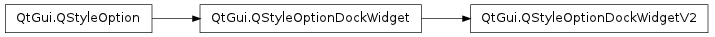

QStyleOptionDockWidgetV2 ¶

Detailed Description ¶
- class PySide.QtGui. QStyleOptionDockWidgetV2 ¶
- class PySide.QtGui. QStyleOptionDockWidgetV2 ( other )
- class PySide.QtGui. QStyleOptionDockWidgetV2 ( other )
- class PySide.QtGui. QStyleOptionDockWidgetV2 ( version )
-
Parameters: - version – PySide.QtCore.int
- other – PySide.QtGui.QStyleOptionDockWidget
- PySide.QtGui.QStyleOptionDockWidgetV2. StyleOptionVersion ¶
- PySide.QtGui.QStyleOptionDockWidgetV2. verticalTitleBar ¶